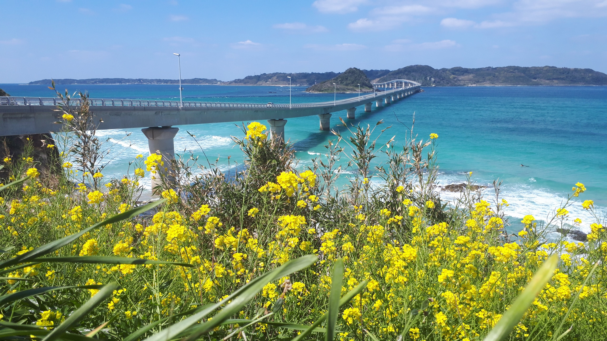
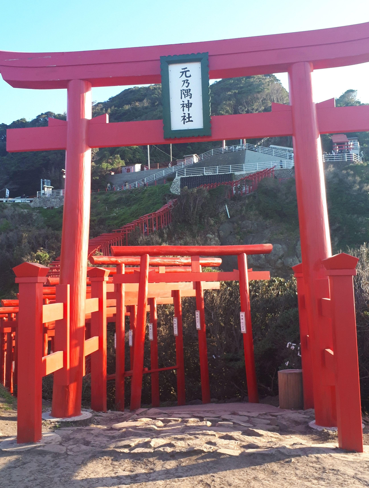
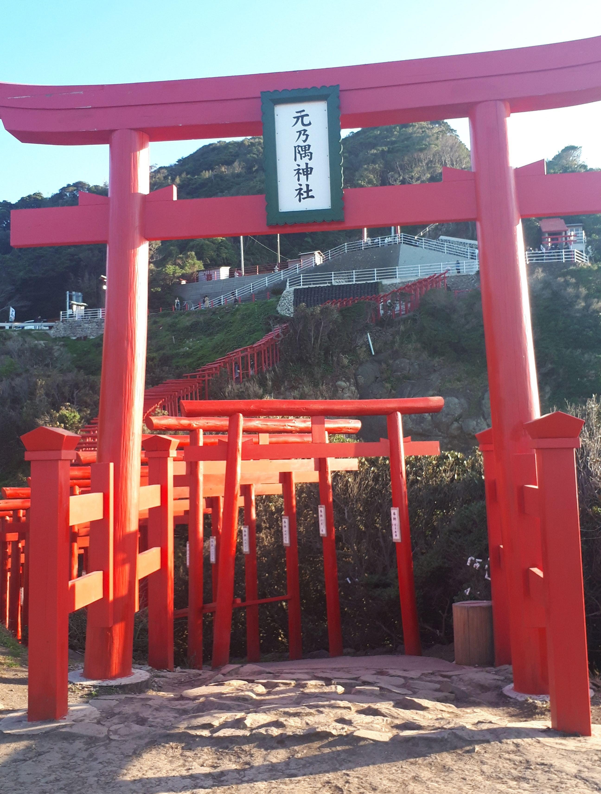
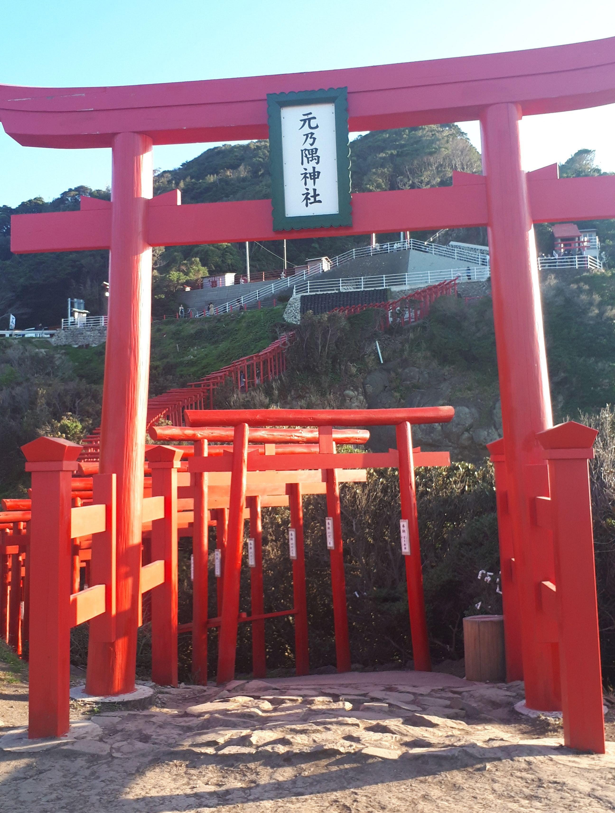
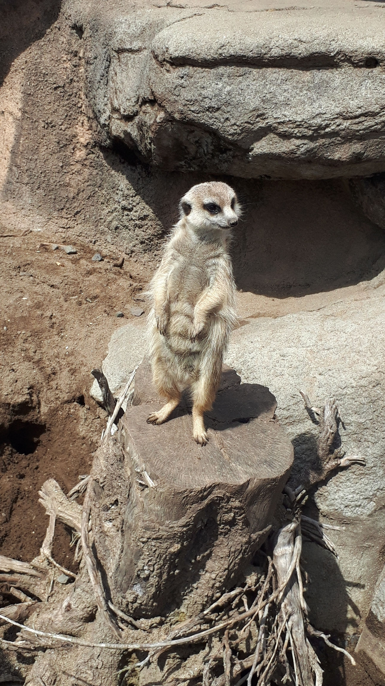
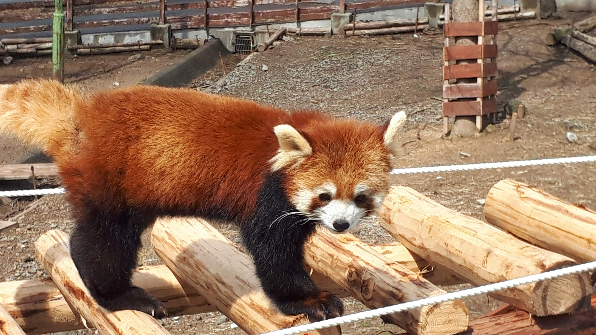
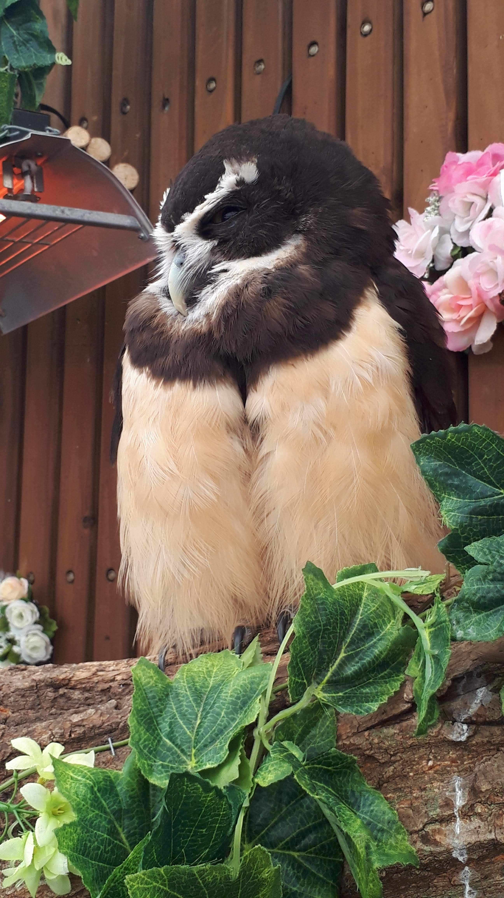
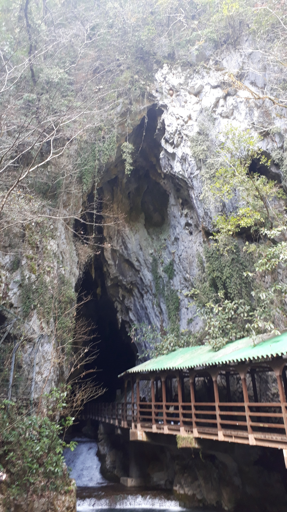
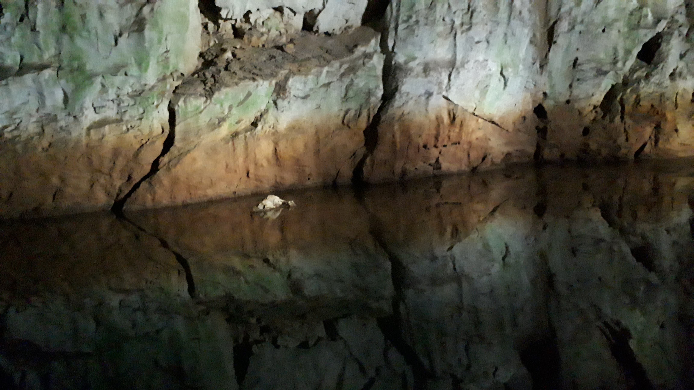

山口旅行

 

まず１番フォトジェニックだった旅行をご紹介します。
３年前、妻と山口県へ旅行へ。上の画像はCM等でも有名な角島大橋です。

そして元乃隅神社へ
鳥居の上に硬貨を投げて願掛けをしました。（ 確か４,５回位チャレンジしました。）
  同県にある秋吉台、秋芳洞にも訪れました。
上の写真は秋吉台サファリランドの動物たち。
 そしてこちらが秋芳洞。自然の造形美を目の当たりにし感動しました。